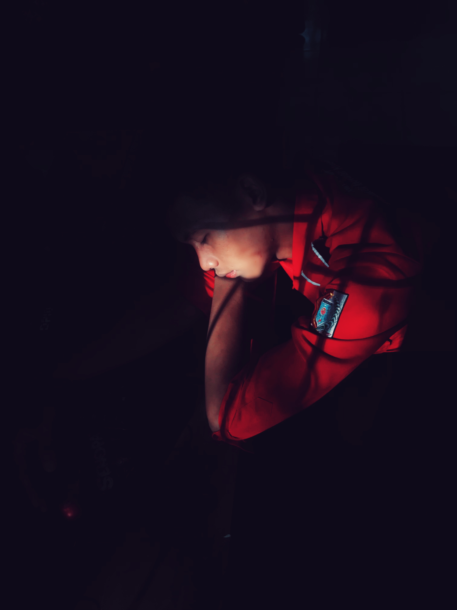

Ketangguhan Tanpa Batas
"Dunia konstruksi bukan untuk mereka yang mudah menyerah. Spirit ini adalah tentang daya tahan di lapangan, kemampuan beradaptasi dengan tim, dan tekad untuk menyelesaikan apa yang sudah dimulai."
Experience: Teruji saat PKL 6 bulan di CV AA Contractor.
Skill: Adaptasi cepat terhadap lingkungan kerja yang keras dan dinamis.